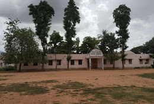

|  |
DVPBHS ( Deshiya Vidya Peeta Boys High School ) is located in , . Currently we do not have any reviews or rating for DVPBHS ( Deshiya Vidya Peeta Boys High School ). There are at least 1 Schools in , out of which this School has an overall rank of 377. Address of the School is DVP Grounds,, Chikkanayakanahalli, Karnataka, India. |